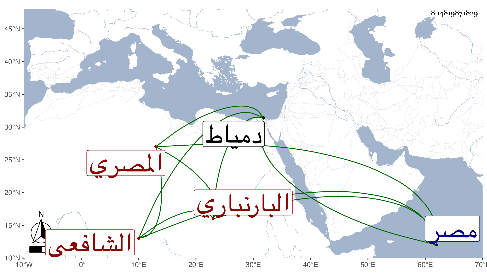

0902Sakhawi.DawLamic.ITO20230111-ara1.EIS1600.804819871829
Biography ID: 804819871829
902
علي بن عمر بن محمد بن إبراهيم بن محمد بن محمد نور الدين ابن الفخر البارنباري ثم المصري الشافعي . ولد في سنة ثمان وسبعين وسبعمائة تقريبا ونشأ بها فقرأ القرآن عند الشمسين الطيبي والأطروش والزكي بكر السوبياني وفتح الدين صدقة وعبد الله الخواص وجوده مع كون كلهم ممن قرأ السبع على الزكي أبي بكر الضرير وحفظ المنهاج والملحة وبعض العمدة وعرض على بعض إخوته وأخذ عن الشمس بن عمار طرفا من العربية بل ومن الفقه أيضا مع كونه مالكيا . وكذا تفقه بالزكي الميدومي والشمس بن القطان ثم بولده البهاء وسمع الحديث على الصلاح الزفتاوي وناصر الدين بن الفرات والنجم البالسي والشهاب الجوهري والفخر القاياتي في آخرين ، وحج وجاور ودخل دمياط في بعض ضروراته وصحب الكمال المجذوب واختص به بحيث كان أكثر أوقاته في مصر عنده . بل ما مات إلا في منزله وحدث وسمع منه الفضلاء وتكسب بالشهادة وقتا ثم أعرض عنها وكان خيرا ساكنا متعففا كثير التلاوة والتهجد محبا في الحديث وأهله راغبا في الإسماع أخذت عنه أشياء ، في جسده بعض بياض . مات في سادس رجب سنة سبع وستين رحمه الله وإيانا .
